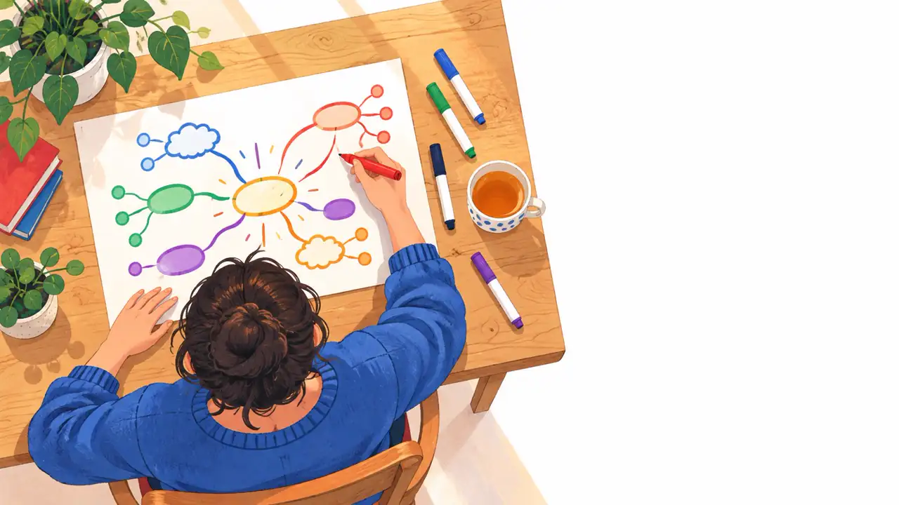
今天你會聽十幾個故事、親手畫三張圖、背起來四首唐詩。
為什麼人類畫了一千七百年的樹，科學家為什麼都用圖想事情。
六大規則、五個步驟、你自己的三張圖、四首唐詩現場背起來。
學長姐的改變，和你一個月、一年後的樣子。
越抄越慌，因為他發現抄完還是記不住。
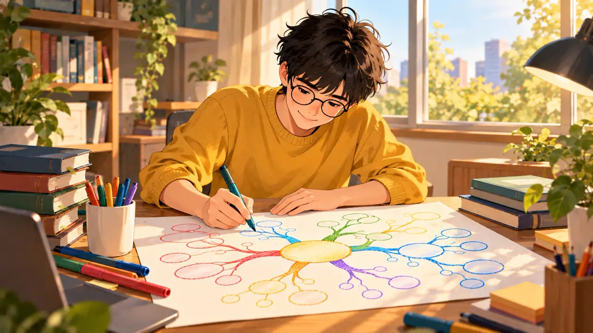
把課本闔上，用四到六條主幹，把一課畫在一張紙上。
他不是背答案，他是看著腦中的圖，把答案「讀」出來。
早上八點先到赤崁樓，這裡是荷蘭人在 1653 年建的普羅民遮城，走進去可以看到九塊贔屭石碑和老榕樹。旁邊巷子裡有一間賣碗粿的老店，建議先吃早餐再進去逛。
中午走路十分鐘到國華街。這條街最有名的是牛肉湯、春捲和豆花。牛肉湯要趁早，過了十二點常常賣完。吃完可以在街尾的布袋戲偶店停一下。
下午搭公車到安平。先看安平古堡，再去旁邊的樹屋，樹根把整間舊倉庫包起來，拍照很好看。四點左右走到港邊吃蝦捲和豆花，看漁船進港。
晚上回到市區的神農街。這條老街晚上點燈，兩邊是老房子改的咖啡店和手作小店，適合慢慢走、買伴手禮，結束一天。
大部分人第三題的答案是「是」。這就是問題所在。
「一圖勝千言。」
這句話每個人都聽過，但很少人知道大腦為什麼真的這樣運作。
四個記憶科學的發現，心智圖剛好全用上。
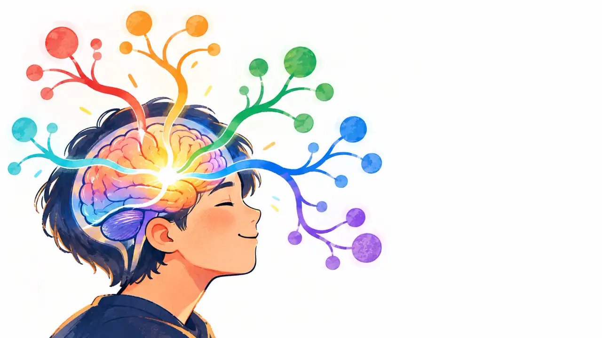
我說「台南」，你腦中同時跳出好幾個東西：牛肉湯、古蹟、熱、某個朋友。它們不是排隊出現的，是一起冒出來的。
這叫放射性思考。筆記如果是一行一行的，就是在逼大腦排隊。
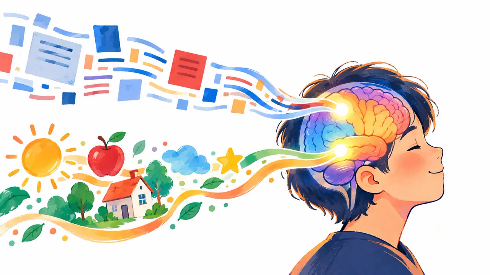
出處：skybraining.com 〈圖像記憶法是什麼〉
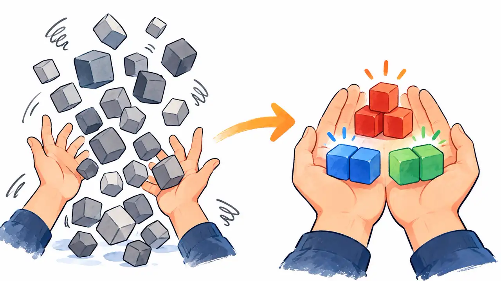
規則二「主幹 4 到 7 條」就是分塊。
出處：skybraining.com 〈遺忘曲線是什麼〉
事後辨認正確率
事後辨認正確率
2020 年，澳洲天主教大學，布里斯本一所小學，41 名 7 到 10 歲孩子，發表於《Child Development》。
做法：畫完心智圖，指著圖唸出聲講一遍。多開一條「聽覺」的路。
出處：skybraining.com 〈國小背課文技巧〉。註：此研究測的是英文單字辨認，未追蹤長期記憶。
| 同一本課本 | 有小考的章節 | 沒小考的章節 |
|---|---|---|
| 章節考 | 94% | 81% |
| 一、兩個月後再考 | 79% | 67% |
Roediger 團隊 2011 年，美國一所中學六年級社會科。重點不是考試，是「闔上書，自己回想」這個動作。
出處：skybraining.com 〈國中背書方法〉。註：研究僅涵蓋一所學校、一位老師。
同樣的量分次做，中間隔開。
讀完闔書，主動回想：小考、閃卡、默寫。
記的時候多留幾條日後找得到的路，最簡單的是唸出聲。
心智圖一張紙同時做到三件事：分次畫、蓋住重畫、圖像加唸出聲。
出處：skybraining.com 〈國小記憶力訓練方法〉
從中心往外長，和腦子一樣。
多開一條記憶的路。
主幹 4 到 7 條。
一眼看完，一分鐘複習。
把想法畫成樹，人類做了一千七百年。
希臘哲學家波菲利用樹狀圖整理亞里斯多德的分類，是最早的知識結構圖。
加泰隆尼亞哲學家用圓盤和分支圖組合概念，被視為視覺思考的先驅。
圖文混排、關鍵字加草圖，最接近現代心智圖的精神。
在 BBC 節目與《Use Your Head》提出「心智圖」這個名詞與畫法。
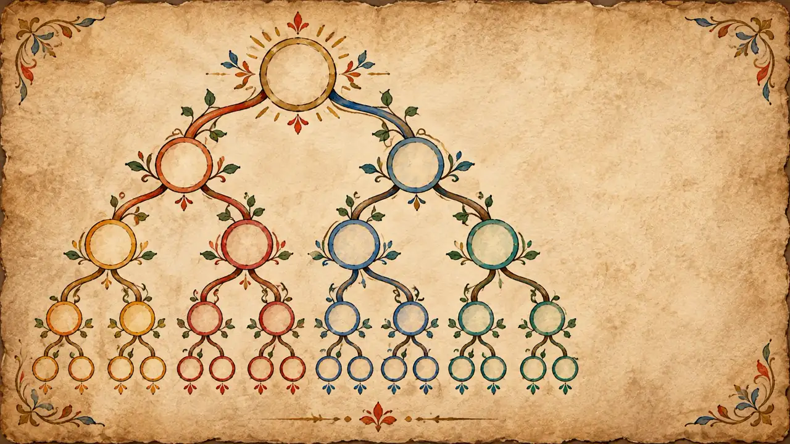
哲學家波菲利為了解釋亞里斯多德的分類法，把「實體」往下拆成「有形、無形」，再拆成「有生命、無生命」，一路拆到「人」。中世紀的學生就靠這棵樹背邏輯學。
一個大概念拆成幾個小概念，再往下拆。這個動作一千七百年沒變過。
柯林斯（Collins）與奎利恩（Quillian）提出：記憶裡的概念像一張網，「金絲雀」連到「鳥」，「鳥」連到「會飛」。越近的概念，想起來越快。
康乃爾大學的諾瓦克（Novak）發展出「概念圖」，用方框和連線標示概念之間的關係，用來研究兒童怎麼學科學。
心智圖是在這個背景下誕生的，不是憑空想出來的。
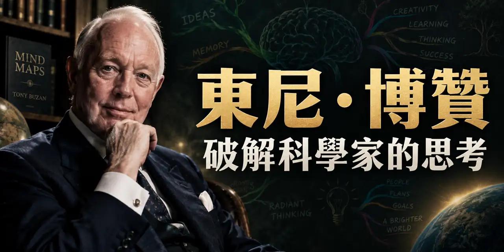
他自己說，放射狀的圖是「借來的老方法」。他做的是把規則整理清楚，然後讓全世界都看到。
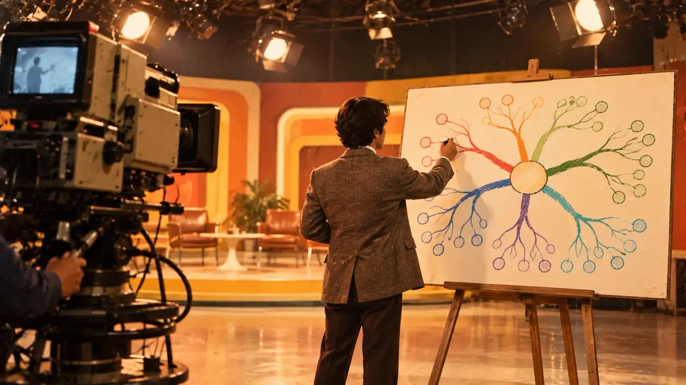
十位改變世界的人。他們沒有一個學過心智圖，但筆記本長得都很像。
幾乎每一頁都是圖和字混在一起。字只當註解，圖才是主角。
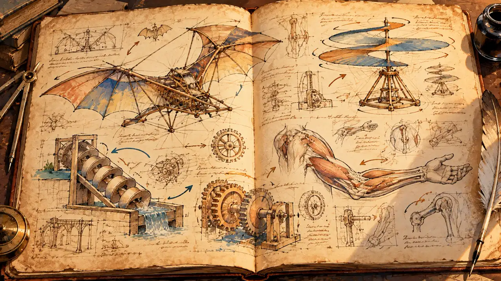
一個觀念：先畫，再寫。
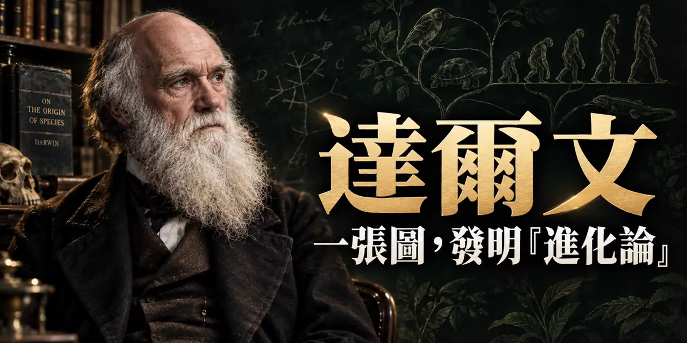
1837 年 7 月，筆記本 B 第 36 頁，他畫了一棵分叉的樹，旁邊寫了兩個字：I think。22 年後，這棵樹變成《物種起源》裡唯一的一張插圖。
最重要的想法，往往先是一張草圖，不是一篇文章。
1609 年他把自製望遠鏡對準月亮，發現月面不是光滑的，有山有谷。他沒有只用文字描述，他畫了一系列月相水彩，連陰影長度都畫出來，再用陰影算出山的高度。
畫，讓他看見文字看不見的東西：陰影的長度。
1665 年倫敦鬧瘟疫，劍橋停課，牛頓回鄉下待了十八個月。他有一本自己叫做「Waste Book」的筆記本，裡面是三稜鏡分光的草圖、蘋果落地的推算、幾何圖形、問題清單，全部混在一起。微積分、光學、萬有引力，都是那十八個月在那本簿子上長出來的。
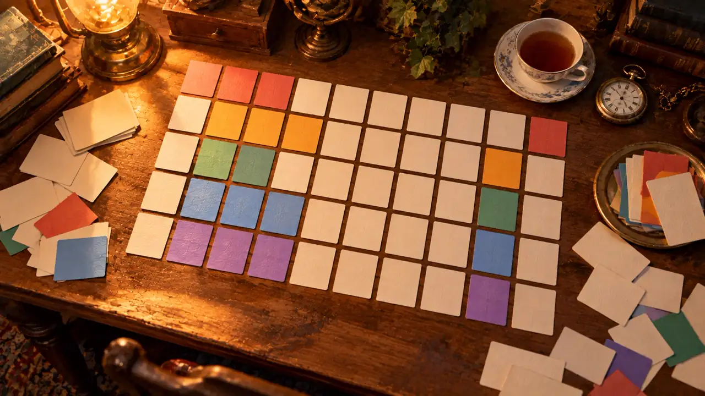
他把當時已知的 63 種元素一個一個寫在卡片上，像玩接龍一樣在桌上反覆排。排不順的地方他留空格，說「這裡應該有一個還沒發現的元素」。後來那些空格一個一個被填上了。
心智圖的第一步也是這樣：先把關鍵字全部攤開，再分組。
他一生留下約三千五百本筆記，裡面是草圖、關鍵字、箭頭、實驗數字。他要求實驗室每個人隨手記，有想法先畫下來，再討論。燈泡、留聲機，都是先出現在筆記本的角落。
靈感不是等來的，是畫出來的。
他在自傳裡說，他設計一台馬達，不用畫圖、不用做模型，在腦中把它組裝起來，讓它運轉幾個星期，再「打開」看哪個零件磨損。他說腦中的畫面跟實物一樣清楚。
他是圖像記憶的極端案例。你不用做到他那樣，但方向是一樣的。
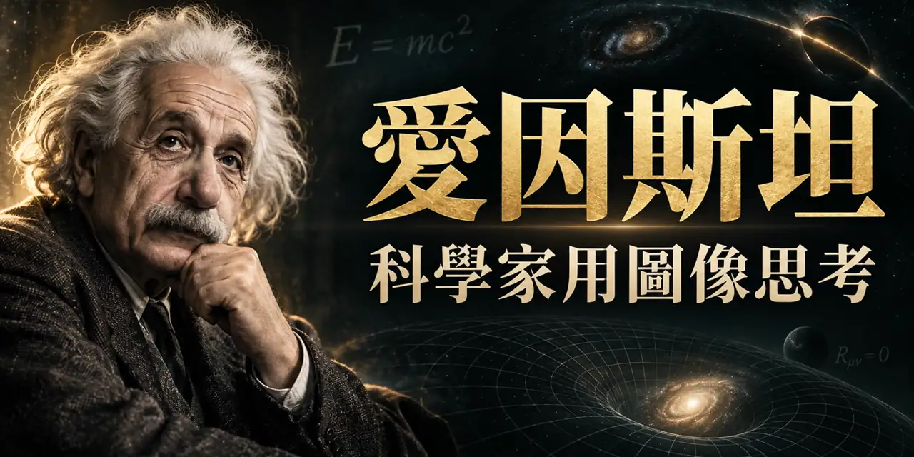
數學家阿達瑪寄問卷問他怎麼思考。他回答：文字在他的思考裡幾乎不扮演角色，他用的是可以自由組合的畫面和符號，想清楚之後才費力翻成文字和公式。相對論的起點，是他十六歲時想像自己追著一道光跑。
一個十六歲少年的畫面，十年後變成相對論。
你的小孩說「我在發呆」的時候，有時候他是在做這件事。
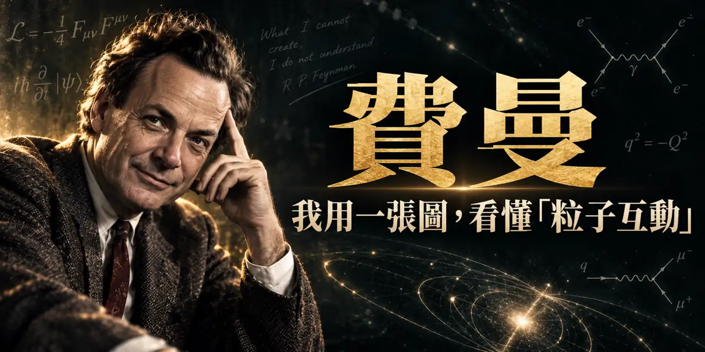
1948 年費曼發明「費曼圖」，用幾條線和一個點表示粒子的碰撞，原本好幾頁的計算變成一張小圖。今天全世界的物理系都在畫這種圖。他也以「費曼學習法」聞名：能用簡單的圖和話講給別人聽，才算真的懂。
等一下你畫心智圖卡住的地方，不要慌，那是你的大腦在告訴你：這裡要回去讀。
1989 年 3 月，他在 CERN 交出一份提案，附一張手繪的泡泡加箭頭圖。箭頭上寫著「包含」「寫了」「描述」。那張圖就是全球資訊網。
出處：skybraining.com 〈全球資訊網的起點〉
1930 年代工作室畫稿幾千張，沒有人看得完。動畫師 Webb Smith 把重點畫稿釘上牆，整部片一眼看完。《三隻小豬》之後成為標準流程。
1943 年在川崎製鐵，他跟工程師討論品質問題時畫了一張圖：右邊寫問題，左邊斜出大刺代表原因類別，大刺再長小刺。大家叫它魚骨圖。
字只是圖的註解。達文西、愛迪生。
草圖比文章早二十年。達爾文、柏納李。
幾頁的東西變成一張圖。門得列夫、費曼、迪士尼。
心智圖做的就是這三件事，只是多了一套規則讓你今天就學得會。
回來之後，紙橫放、彩色筆打開。
規則不多，但每一條都有理由，而且你剛剛都聽過了。
理由：雙重編碼，多開一條路。
理由：放射性思考、米勒的 7 加減 2。
理由：詞是鉤子，句子是繩子。回想時大腦抓鉤子，自己長出繩子。
理由：波菲利之樹。一千七百年的分類法。
理由：達文西的箭頭、柏納李的關係詞。
兩分鐘。有圖、三種顏色、不求美。這張的主題是「我的一天」，中心畫了一個太陽。
先想好大類再畫。這張是五條：早上、工作、午餐、運動、晚上。先不寫字。
字寫在線上，跟線同色，一條線一個詞。
每條主幹長兩到三個細分支，同色，字更小。圖開始填滿紙。
重點旁邊加星星、愛心、小房子。運動和晚上有關係，畫一條虛線箭頭連起來。
主題：今天這堂課。請看我每一步在做規則幾、步驟幾。
來免費課 學習強腦力 記憶超能力
來免費課 學習強腦力 記憶超能力
來免費課 學習強腦力 記憶超能力
來免費課 學習強腦力 記憶超能力